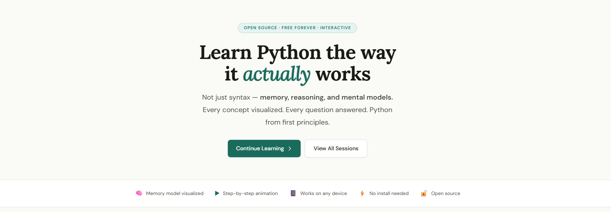
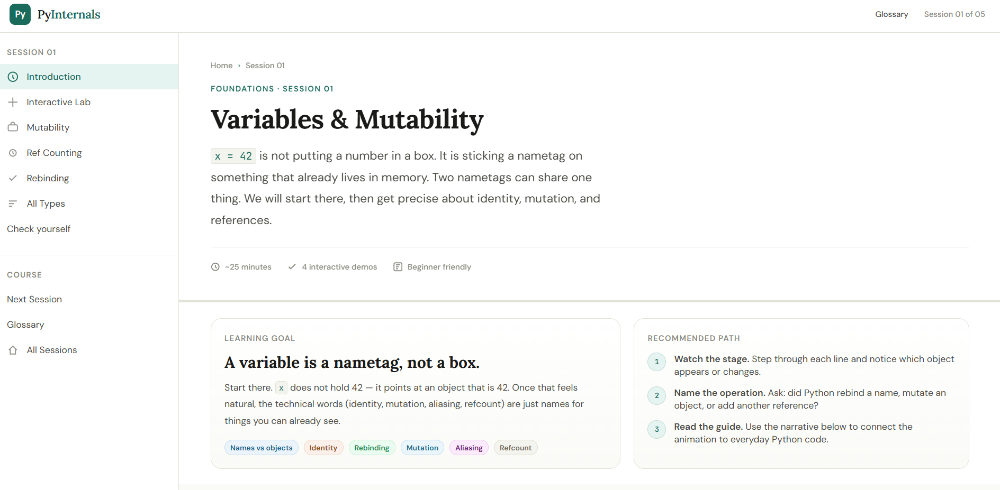
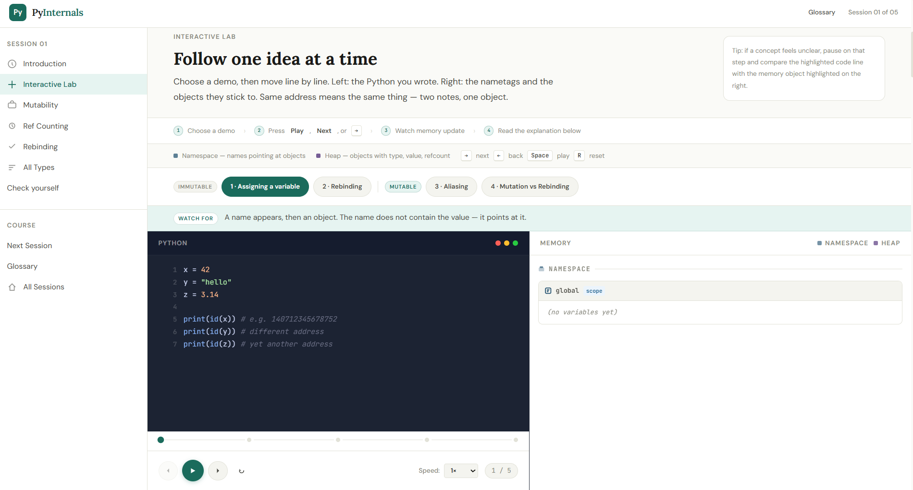

Py Internals is an open-source, interactive course that teaches Python by making its memory model visible. Most tutorials teach you what to type. This one teaches you what Python does with it — names, objects, frames, references, and garbage collection — as an animated memory diagram you can step through at your own pace.

Each lesson is a lab: Python on the left, a memory diagram on the right, and a written explanation underneath. There is no backend, no account, no analytics tracker, and no build step. Open the URL and start. I built the product, the pedagogy, the visual system, and the frontend myself.
A huge number of people can use Python and still cannot explain it. They write x = 42
and think a box named x now contains 42. They write b = a on a list and
are shocked when b.append(1) changes a. They pass a dict into a function,
mutate a nested list, then rebind the parameter — and cannot predict what the caller still sees.
That gap — between syntax fluency and a working mental model — is where the real bugs live. It is
also where most courses stop. They show the happy path, print a result, and move on. The learner
never sees that a name is a binding, that assignment rebinds while append mutates,
that two names can point at one object, or that a function call is a temporary namespace on a stack.
I wanted three things at once: a picture you can trust, a pace you control, and zero friction. If you cannot draw the memory, the explanation is unfinished. Autoplay exists, but the real design is step-by-step. And a learner on a cheap laptop or a teacher on a projector should just open the URL.
Courses optimize for finishing a task. They rarely draw the thing that actually matters: what objects exist, which names point at them, and whether a line rebound a name or mutated an object.
The learner never sees:
append mutatefor loop is iter + next + StopIterationI built Py Internals to close that gap visually, for free, with no login and no install.
Developers who already write Python and keep hitting “why did that happen?” People coming from languages where variables really are boxes. Teachers and bootcamps who need a shared picture of names versus objects. Anyone who has used Python Tutor and wanted a slower, more editorial, more course-like version of that idea.
It is not a syntax bootcamp, a LeetCode trainer, or a CPython source-code tour. The model stays at the Python level on purpose: names, objects, references, frames. Implementation details — C structs, interned small ints, the GIL — appear only when they change the mental model.
Stack frames, heap objects, reference links, refcounts, and visual states for new, rebound, mutated, and about-to-be-collected objects.
Each demo is a scripted execution. Play, pause, next, previous, reset, and speed — keyboard controls make it feel like a debugger, not a slideshow.
See the animation, read the model in prose, then predict the next diagram in a quiz. A perfect score marks the session complete.
No React, no npm, no login. Static files on GitHub Pages. Progress lives in localStorage. Clone it, serve it, learn.
Narrative articles, “watch for” hints, type chips, a searchable glossary of ~35 terms, and a homepage that remembers where you left off.
Content and renderer are separate. A new lesson is a new story in the same snapshot language — not a new visualizer.
Each session opens like an essay with a lab in the middle: a learning goal, a recommended path, and a sidebar that tracks where you are in the course.

Python on the left, memory on the right. The diagram is the product: namespaces, heap objects, type-colored chips, and playback that you own. Space to pause. R to reset.

A session is not a video and not a notebook. It is a scripted execution of a small Python program, authored as a sequence of memory snapshots.
Each snapshot is a plain JavaScript object: which frames exist, which names are bound, which heap objects are alive, what their refcounts are, and what just changed. A renderer turns that snapshot into DOM — stack on one side, heap on the other, highlight rings, GC pulse. An animator owns time. A highlighter syncs the current line in the code panel.
| Layer | Responsibility |
|---|---|
session.js |
The lesson itself — code, steps, titles, explanations, and memory snapshots |
PJ.MemoryViz |
Draw one snapshot: frames, heap, highlights, object states |
PJ.Animator |
Own playback: index, timer, controls, step dots, speed |
PJ.Syntax |
Highlight Python and mark the active / already-executed lines |
PJ.Core |
App chrome: sidebar, quizzes, progress, “continue learning”, keyboard |
That split is the architecture. A new lesson does not require a new visualizer. It requires a new story told in the same snapshot language. The implementation guide is explicit about how to write that story: first step is empty memory, last step is the settled state, one concept per step, 5–8 steps per demo, highlight only what this step is about.
Below is the kind of object a session authors. Teaching addresses stay stable on purpose. This is a diagram for a learner, not a dump from a live interpreter.
{
title: "Two names, one list",
line: 2,
frames: [
{
name: "global",
bindings: [
{ name: "a", ref: "0x7f10" },
{ name: "b", ref: "0x7f10" }
]
}
],
heap: [
{
id: "0x7f10",
type: "list",
value: [1, 2],
refs: 2,
mutable: true,
state: "mutated"
}
]
}A name points at an object. Everything else is a consequence of that.
Functions add temporary names (frames). Lists and dicts store more references. Classes split data (instance) from behavior (class). Iterators are cursors over those objects. Generators are frames that pause instead of returning. I do not need a visitor to walk every session. If they understand that sentence, they understand the product.
id(), mutability, reference countThe visualizer handles single frames or a full call stack, inline versus referenced values, and lists, dicts, functions, classes, instances, methods, and generators. Type-specific colors mean an int and a list are never visually the same.
The quizzes do not ask “what does this print?” They ask “which memory picture is true?”
| Typical course | Python Tutor | Py Internals | |
|---|---|---|---|
| Job | Teach syntax and exercises | Visualize your code once | Teach the model with a visual, as a course |
| Unit of attention | A topic chapter | A single program run | One idea per animation step |
| Memory | Mentioned, rarely drawn | Drawn, but you bring the code | Drawn for you, then named in prose |
| Pedagogy | Watch / type / quiz syntax | Explore / debug | Watch → name → predict |
| Friction | Account, video, CMS | Paste code, hope the example is good | Open URL, press Next |
Versus Python Tutor. Philip Guo’s visualizer is the original and still the best general tracer. Py Internals is not trying to replace it. Python Tutor visualizes arbitrary user code. This course visualizes authored lessons: every step has a title, a claim, a highlight, and a reason. A live tracer shows everything. A teacher shows the one thing that matters on this step.
Versus books. Fluent Python is the book that made the object model click
for a lot of us. Books cannot step. They cannot pulse a dying object when the refcount hits zero.
They cannot let you rewind b = a until the alias is obvious. This is the visual
companion to that kind of thinking — not a replacement for it.
Versus video. Video is time you cannot query. Here the learner owns the clock. The same demo, five times, until the picture sticks.
Versus a React/Next app. A framework would have been faster to start and heavier forever. The audience includes people who will read the source to learn how the site itself works. The stack is part of the teaching: complexity is earned, not default.
No live Python in the browser. Snapshots are hand-authored. That costs time and buys clarity. A real interpreter would show interned ints, peephole details, and frame objects the learner is not ready for. The guide is explicit: this is a teaching diagram, not a claim that CPython looks like these DIVs.
No backend. Progress is local. That means no cross-device sync and no learning analytics — and also no accounts, no cookies, no outage, no GDPR surface.
Python-level model, not C-level. I will not explain PyObject headers
in Session 01. I will explain why a is b is the question you meant to ask.
One concept per step. If a step asks you to watch two mutations, the step is wrong.
Beautiful enough to take seriously. Learning tools default to homework gray. This one is typeset like an essay with a lab in the middle — cream paper, editorial serif titles, deep teal and amber. That is a product decision, not decoration.
Live sessions
Interactive demos
Authored steps
Quiz items
Glossary terms
Shared CSS and JS across every session. Session-specific logic lives only in that session’s
session.js. The homepage, glossary, and labs share one design language. The license
matches the intent: free to use, share, adapt, and embed for education; attribution required;
share-alike for derivatives; no selling or paywalling the material without permission.
I designed and built the entire product:
Authoring is the hard part. The engine is a few hundred lines. The work is deciding what not to show. Every demo is a storyboard: empty world, one change, one sentence, one highlight. Nested lists cannot be honest arrows yet, so parent slots carry readable labels and the inner object sits on the heap beside them. That compromise is documented so future sessions do not pretend the diagram is a memory dump.
Shared engine versus session drift. Session 02 needed call stacks. Session 03 needed
nested references. Session 04 needed classRef and bases. The rule became: promote a
pattern to shared CSS/JS only when a second session needs it unchanged. Until then, keep it local.
That kept the core small.
Teaching without lying. Closures are not literally dicts. Shallow copy is not “a
broken copy.” self is not magic. The copy in the UI has to be vivid and still
defensible. The implementation guide is as much an ethics document as a style guide.
Making “no build tools” feel like a product. Design tokens, motion, keyboard, progress, quizzes, responsive stage — all without a component library. The cost is discipline. The payoff is that a contributor can open one HTML file and understand the page.
Decorators first — first-class functions, wrappers, functools — then the GIL, threads,
processes, and asyncio. Same visual contract, harder runtime questions.
After that, the interesting product question is not “more topics.” It is whether the snapshot language can grow — true nested arrows, richer generator frames — without breaking the rule that one step teaches one thing.
A learner who finishes the live path should look at unfamiliar Python and ask better questions: What objects exist? Which names point at them? Did this line rebind or mutate? Which frame is this name in? Is this a copy or an alias? Where does this attribute actually live?
That is the win. Not “they completed five modules.” They stopped being surprised by the language they already use.
Standing on: Python Tutor (Philip Guo), the CPython internals docs, and Fluent Python (Luciano Ramalho).